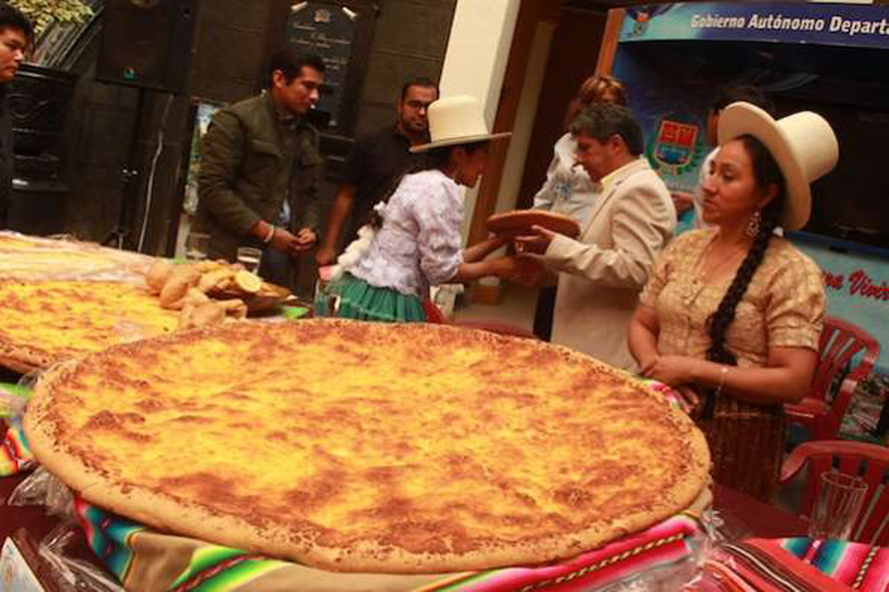
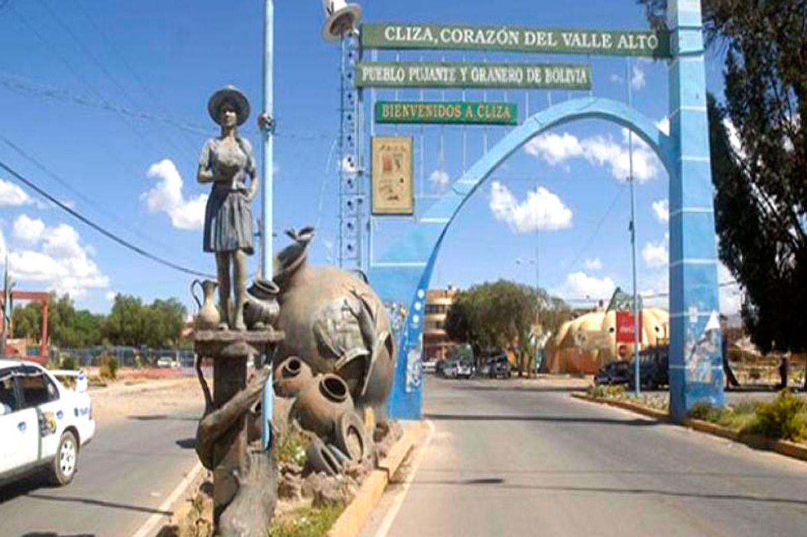
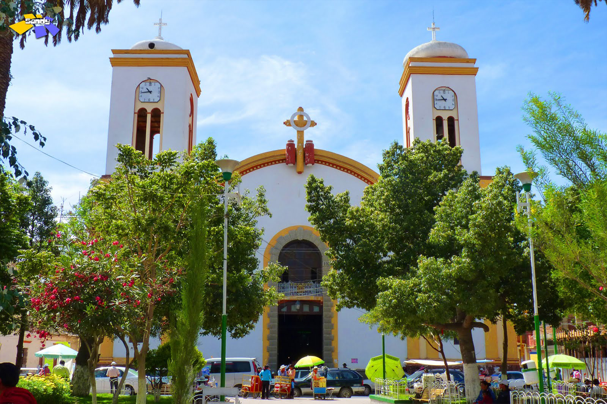
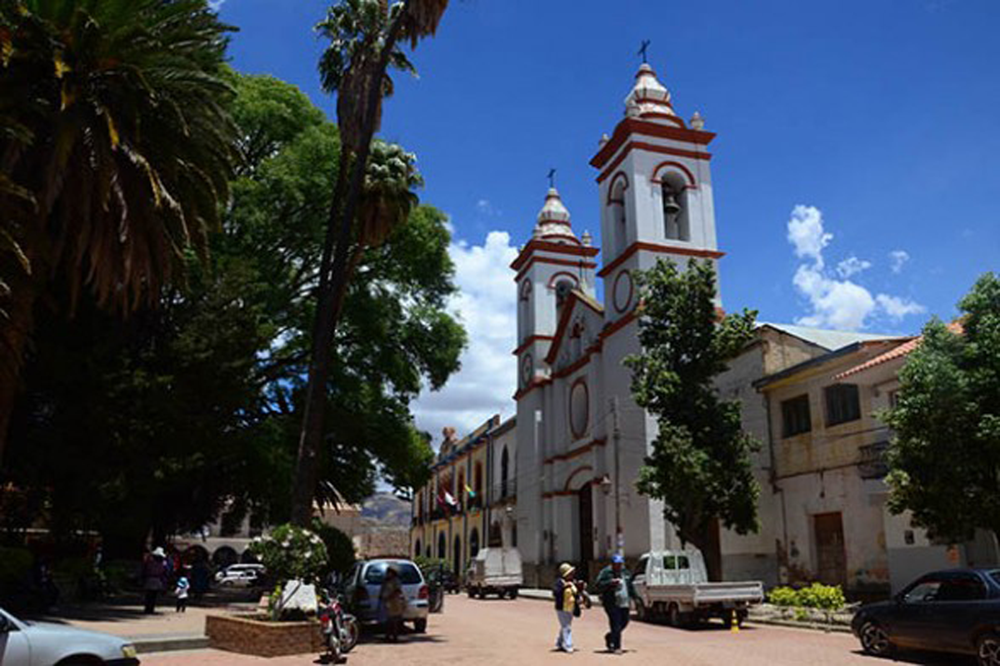

Cochabamba
Cochabamba es una ciudad del centro de Bolivia. En un cerro en el este, un teleférico asciende a la enorme estatua del Cristo de la Concordia con vista al área circundante. En el centro de la ciudad está la Plaza 14 de Septiembre, una plaza colonial rodeada de galerías y la catedral barroca andina de San Sebastián. En los alrededores, hay muchas iglesias coloniales, como la de Santo Domingo con su impresionante fachada de piedra tallada.
La temperatura actual es: ° C 
Ingresa a una de estas imágenes y descubre más acerca de los lugares turísticos de Cochabamba.

Arani
Provincia de Cochabamba donde se desgusta diferentes platos típicos.

Cliza
Cliza es una pequeña ciudad y un municipio de Bolivia.

Punata
Capital de la provincia de Punata en el departamento de Cochabamba.

Tarata
Capital de la primera sección municipal, conocida como la «Villa Colonial».